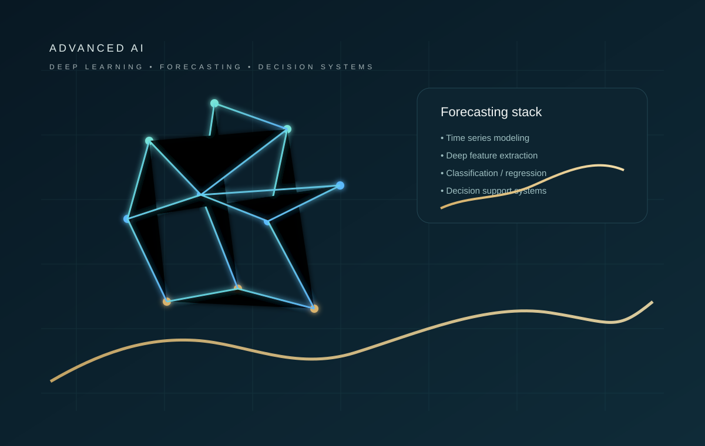

DEEP LEARNING & FORECASTING
Advanced predictive models
Neural networks, deep learning, time-series forecasting, classification and custom architectures for demanding quantitative tasks.
MATHEMATICS · QUANTITATIVE TECHNOLOGY · EDUCATION
CerebraQuant Solutions translates mathematical research into quantitative technologies, supports complex scientific projects, and delivers advanced live training.
Complementary capabilities united by a culture of mathematical modeling, engineering and scientific validation.
Portfolio allocation, hedging and quantitative model engineering. Licensing, acquisitions or custom development.
Explore technology ↗Quantitative finance, AI, PDEs, numerical simulation and mathematical optimization.
Explore expertise ↗Expert-led, live online masterclasses and training for individuals and organizations.
Explore Academy ↗A scientific process grounded in clear assumptions, thoughtful modeling and reproducible validation.
Our approach ↗Our AI positioning goes beyond generic tooling. It is grounded in advanced models, learnable architectures and a strong connection to applied mathematics and quantitative decision systems.

Neural networks, deep learning, time-series forecasting, classification and custom architectures for demanding quantitative tasks.

PINNs, equation-informed models, structural constraints and mathematically grounded learning strategies.

Tailored algorithm engineering for quantitative finance, optimization, decision systems and technology transfer.
Explore the technologies, research directions and learning experiences shaping our work.
Quantitative techniques focused on risk, constraints and robustness.
Explore ↗PEER-REVIEWED SCIENCEResearch in numerical analysis, conservation laws and Scientific Machine Learning.
View research ↗LIVE LEARNING EXPERIENCE
Rigorous teaching, Python programming and guided live workshops.
Explore Academy ↗Khalil Haddaoui, PhD — PhD in Applied Mathematics (Université Pierre et Marie Curie, Paris VI), with experience spanning quantitative finance, scientific computing and higher education.
Meet the founder ↗Quantitative technology, R&D or advanced training — let's find the right starting point.
Get in touch ↗